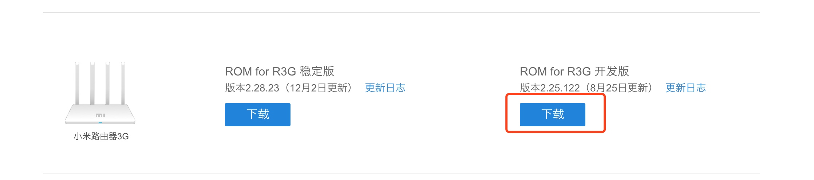
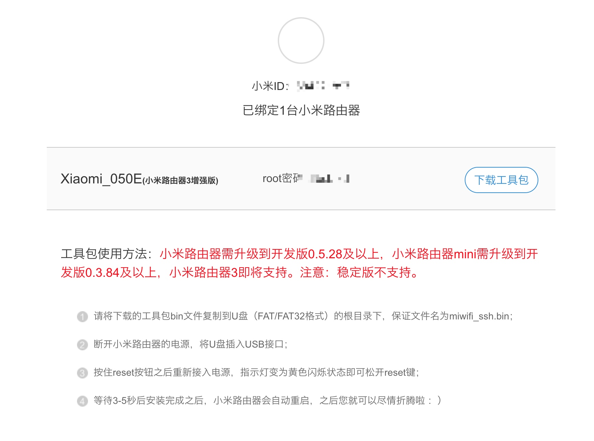
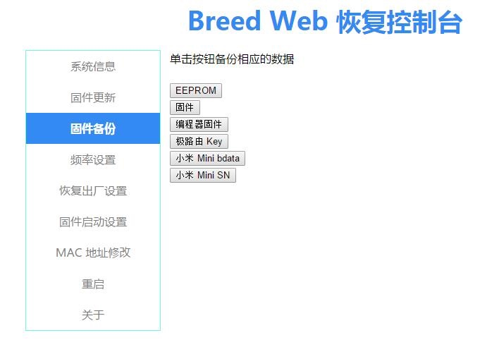

准备：
- 小米路由3G
- Windows或Mac电脑网线连接路由
- U盘（FAT/FAT32格式）
注：
使用网线连接路由后进行操作 不保证内容的正确性，不承担带来的风险和后果
一、刷开发版ROM

- 打开192.168.31.1
- 升级固件，选择刚刚下载的文件
二、刷SSH
- 下载地址及方法(需登录绑定路由)：https://d.miwifi.com/rom/ssh

- 请将下载的工具包bin文件复制到U盘（FAT/FAT32格式）的根目录下，保证文件名为miwifi_ssh.bin；
- 断开小米路由器的电源，将U盘插入USB接口；
- 按住reset按钮之后重新接入电源，指示灯变为黄色闪烁状态即可松开reset键；
- 等待3-5秒后安装完成之后，小米路由器会自动重启，之后您就可以尽情折腾啦 ：）
三、刷breed
注：Windows电脑需要安装xshell，MAC直接使用终端
- 输入:
ssh root@192.168.31.1回车 - 输入步骤二的root密码，回车
- 输入:
wget https://breed.hackpascal.net/breed-mt7621-xiaomi-r3g.bin回车 - 输入:
mtd write breed-mt7621-xiaomi-r3g.bin u-boot回车 - 断开小米路由器的电源，按住reset按钮之后重新接入电源，指示灯闪烁三次后松开
- 打开192.168.1.1

四、刷固件
- 下载固件：http://opt.cn2qq.com/padavan/MI-R3G_3.4.3.9-099.trx
- 也可以打开http://opt.cn2qq.com/padavan/选择对应固件
MI-R3G_3.4.3.9-099.trx下载 - 固件更新 - 固件-选择文件 - 上传
- 完成后打开192.168.123.1进行配置
参考来源：
http://rt.cn2k.net/?p=85 https://zhuanlan.zhihu.com/p/38705188 https://www.right.com.cn/forum/thread-161906-1-1.html